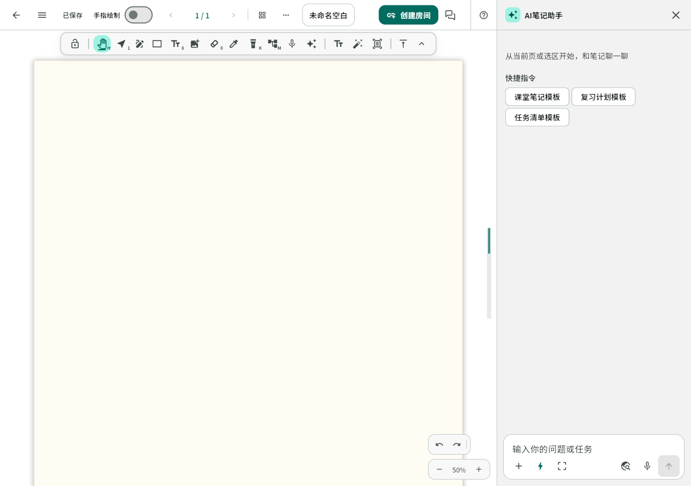

AI 笔记助手
读到哪里，就从哪里聊起。
在画布旁持续对话，围绕文字选区、当前页或 PDF 提问。逐段阅读回复，按需查资料，再把核对过的结果整理成可编辑的笔记。

带上上下文，再开始对话。
宽屏对话侧栏为画布留出空间，可以调整宽度；收起后重新打开，当前编辑会话中的草稿和已完成回复仍在。
- 文字选区自动引用
- 助手打开时框选文字，输入区会锁定“当前文字选区”。取消画布选中后仍保留这份来源，可手动移除或重新选择。
- 当前页与整篇文字
- 从来源菜单选择当前页、整篇笔记文字或 PDF 页面，发送前查看附带的内容。回复保留来源，方便回到原处核对。
- 选区截图
- 用独立的截图按钮框选需要解释的图文，点开附件查看截图内容，确认后再发送。
- 快捷指令与追问
- 解释这段、检查公式、整理文字、提炼待办或使用常用模板，也可以直接提出自己的问题，继续追问并随时停止生成。
回复逐段出现，公式也能看清。
Web 与 Android 在模型服务支持时流式显示回复，支持 Markdown 和 LaTeX 公式。鸿蒙当前沿用完整回复。
- 按需联网搜索
- 登录 FlowMuse 后打开联网搜索，照常提问。模型在需要时自行生成搜索词、检索网页并继续回答，回复提供可核对的网页来源。
- 查证再使用
- 联网搜索取决于检索服务和模型的工具调用能力。网页与生成内容可能有错，引用前检查来源、日期与上下文。
把整理稿，留在新的几页里。
查看整理预览，确认后写入。原稿保留在笔记中，新增内容继续使用原有编辑、保存与撤销流程。
- 整理为笔记
- 把材料组织成有标题、段落、列表和公式的整理稿。分页笔记与 PDF 内容较长时追加新页；无限画布放在原内容旁。
- 可编辑的结果
- 可以插入文字、生成思维导图、修改笔记名，或进入智能排版审阅。修改笔记的动作经过确认，整理稿写入后可一次撤销。
选择支持图片输入的多模态模型。
在设置中使用服务商预设，或填写服务地址、模型与密钥。服务地址和可用模型以你实际使用的服务为准。
来不及写的时候，也可以说出来
让语音成为白板上的普通可编辑文字。